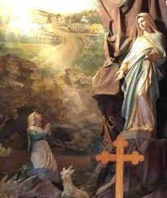
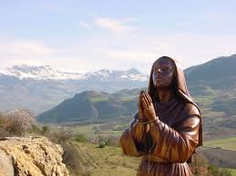
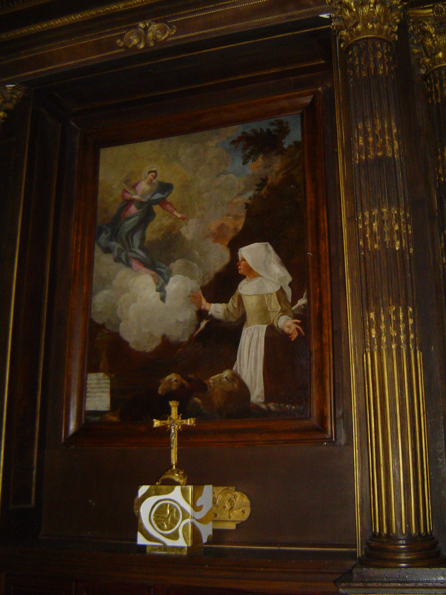

“DIMENSÃO INFINITA DO AMOR”
A FAMA DAS APARIÇÕES SE PROPAGOU
Todos queriam ver e
ouvir Benedita... Ela com entusiasmo dizia as pessoas sobre o que a alegrava tanto
e a deixava feliz, mesmo que ainda ela não soubesse quem 
Perguntavam: "Será que você vê a VIRGEM MARIA?"
Mas Benedita não faz suposições e nem tenta saber quem é AQUELA MULHER: ela apenas vê, ama, é feliz, e isso lhe basta. Sua patroa, maravilhada com aquelas noticias, quer saber o que está acontecendo no vale Forni e um dia saiu de casa chegando secretamente à caverna antes de Benedita. Quando a pastora chegou, NOSSA SENHORA lhe disse que a sua patroa estava escondida ali, atrás de uma pedra. Está aqui. Avise-a para não blasfemar mais porque se continuar blasfemando não haverá no Céu lugar para ela; a sua consciência está muito mal, faça penitência, distribua aos pobres a comida e o vinho que ela tomaria na Páscoa, em Pentecostes e no Natal, e também, ela não coma nada além de pão e água nessas três festas”.
A patroa pecadora do seu esconderijo ouviu tudo; se arrependeu, e se converteu a uma vida melhor. Este fato convenceu as pessoas de que Benedita realmente via algo extraordinário!
VOCÊ ME VERÁ NO LAUS
A bela senhora era, portanto, MARIA. Este doce nome deve ter assustado Benedita, mas não a surpreendeu: a doçura que ela provara até aquele momento era grande demais para ser aumentada por uma palavra que nem mesmo sentiu a necessidade de saber. Nem se notou nela nenhuma mudança: a pequena pastora continuará a tratar a MÃE DE DEUS com a mesma familiaridade e mesma confiança com que tratou a DIVINA SENHORA com o MENINO.
A gruta onde a VIRGEM e o seu FILHO estiveram durante quatro meses com Benedita, no local foi erguido primeiro um oratório e depois, uma pequena Capela que ainda até hoje existe e leva o nome de NOSSA SENHORA DE FORNI.
As últimas palavras de MARIA no Forni, "Não me vereis mais neste lugar", foram para Benedita como uma espada de dor que perfurou o seu coração. Desolada e chorando, ela vagou pelo vale sempre procurando “Aquela” que era a fonte da sua verdadeira alegria e felicidade.
Todavia, um fenômeno secreto a atraiu para outro lugar. Passado um mês do último encontro com a SENHORA, do outro lado de uma pequena montanha onde se esconde o Laus, Benedita viu de longe, uma luz mais brilhante do que o sol e, nessa auréola deslumbrante se encontrava a maravilhosa SENHORA. Mais rápido que um raio, ele voou em direção a essa visão milagrosa. Ofegante, repleta de cansaço e emoção, subiu a ladeira e em poucos instantes se encontrava aos pés da SANTA MÃE DE DEUS!
Benedita a cumprimenta, e com uma pequena lágrima de alegria nos olhos, e com a natural simplicidade do seu coração, reclamou com a SANTÍSSIMA VIRGEM MARIA aquela longa ausência. A VIRGEM sorriu e lhe disse: "Vá ao Laus. Lá você encontrará uma pequena Capela onde sentirá um perfume muito agradável: lá você ME verá e falará COMIGO muitas vezes".
O lugar desta aparição é chamado “Pindreau” . Atualmente foi edificado no local, um monumento sugestivo. Benedita correu imediatamente para o lugar em que a VIRGEM lhe indicou, mas a vegetação cresceu e cobriu o vale, não lhe permitindo distinguir a distância, o “futuro local da Basílica da Rainha dos Céus” nas pobres cabanas dos simples camponeses. Mas eis que ao passar defronte uma porta entreaberta de uma cabana, ela sentiu o cheiro de um perfume que não se parecia com aqueles perfumes usados pela humanidade. Benedita exclamou:“ELA está aqui!” E de fato, sobre um altar nu e empoeirado, ela vê a sua boa “MÃE CELESTE”
A MISSÃO DE BENEDITA
Ao avistar a bela SENHORA, a pequena pastora se ajoelha e depois, erguendo os olhos para aquele altar nu, oferece-lhe o avental branco para que possa descansar os pés. A VIRGEM o deixa com ela, mas a pastora continua reclamando da pobreza da capela.
No entanto, NOSSA SENHORA agora começa a lhe mostrar os seus planos. “Não se preocupe com isso” - disse ELA – “Não vai demorar muito para que não falte nada aqui, nem toalhas, nem velas, nem enfeites. Quero construir neste lugar uma grande Igreja e uma casa para a residência de um Sacerdote. A Igreja será construída em honra do MEU QUERIDO FILHO e também em MINHA HONRA: será do comprimento e da largura que EU quero. Muitos pecadores se converterão e você ME verá aqui muitas vezes”.
Disse Benedita – “Construir uma Igreja? Mas não temos dinheiro! MÃE, nós temos que ficar nesta Capela como está!”.
Disse NOSSA SENHORA - “Não se preocupe, quando chegar o momento certo você encontrará tudo o que precisa. O dinheiro dos pobres dará tudo: você verá que nada faltará”.
Durante
aquelas palavras deliciosas, a SANTÍSSIMA VIRGEM MARIA continuou com doçura
e muita paciência preparando Benedita para a sua futura missão, 
Tratava-se de conduzir as almas perdidas a este lugar pelos caminhos do mundo: era preciso despertar as consciências adormecidas, mostrar-lhes o abismo que cavaram sob os pés, incutir-lhes a coragem de confessar, caminhar definitivamente no caminho da justiça e da santidade.
Para essa obra especial, os recursos humanos não eram suficientes, mas a VIRGEM tem outros meios: começa pelas curas, atraindo assim os pecadores, fazendo-os compreender a necessidade de cuidar da vida do corpo e também da alma. A quantidade de prodígios atraiu um grande número de peregrinos, tanto da França como do exterior.
Nossa Senhora também disse a Benedita que o óleo da lâmpada da Capela teria uma virtude milagrosa para curar qualquer enfermidade.
Mas o prodígio mais extraordinário foi aquele que a VIRGEM realizou a favor das crianças que morreram sem receberem o Batismo, precisamente para recordar a humanidade, o grande valor e a importância deste Sacramento. As crianças falecidas foram colocadas no altar da VIRGEM, por um curto espaço de tempo, e elas voltaram à vida e imediatamente receberam o Sacramento do Batismo. Geralmente as crianças adormeciam novamente após o Batismo, voando do Laus diretamente para o Paraíso DIVINO! Umas poucas crianças viveram e cumpriram o seu viver com dignidade.
VÍTIMA PARA OS PECADORES
Enquanto isso, a autoridade eclesiástica estava investigando para ter a certeza da origem divina de todos aqueles fatos maravilhosos.

Mas em consequência da grande afluência de pessoas com a multiplicação das peregrinações, foi necessária a construção de uma Capela maior. E como este era também o desejo de NOSSA SENHORA, que prometeu superar todos os obstáculos para edificar um Templo bonito e grande, para acolher todos que nele viessem rezar, assim foi feito, e em quatro anos, ou seja, no ano de 1670 o Santuário foi concluído. Em março de 1892, o Papa Leão XIII concedeu ao Santuário o título de Basílica Menor.
Mas não se pode calar sobre um acontecimento maravilhoso típico de Laus: a presença dos perfumes celestes que a VIRGEM MARIA enchia o Santuário e o vale, cada vez que ELA aparecia. E o milagre dos perfumes celestes, ainda hoje não cessou. E outro grande prodígio acontecido no Laus foi o trabalho realizado por NOSSA SENHORA na alma de sua Benedita. NOSSA MÃE SANTÍSSIMA a enriqueceu com as maiores graças, adornou-a com as mais raras virtudes, comunicando-lhe também os dons mais extraordinários, como o dos milagres e a intuição das consciências.
Benedita, depois de ter facilitado aos pecadores o perdão dos pecados com uma confissão sincera, com suas palavras inspirou a vontade de cada um, trilhar o caminho da virtude. Mas como podem os corações mais duros inclinar-se para DEUS? Era necessária uma extraordinária abundância de graça para uma real transformação, uma obra preciosa que só é obtida com muitas orações e sacrifícios.
Benedita se ofereceu então como vítima por eles: rezar e sofrer pelos pecadores, jejuar por eles, assim como fazer severas penitências em benefício deles.
A tudo isso, foi acrescentado às dores dos estigmas e as vexações que o demônio lhe causou. Sem dúvida, este foi o grande segredo de muitas e duradouras conversões que aconteceram. Ela sofria em silêncio, entregando a DEUS as suas dores em beneficio da conversão dos pecadores